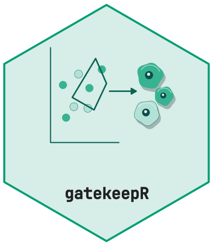
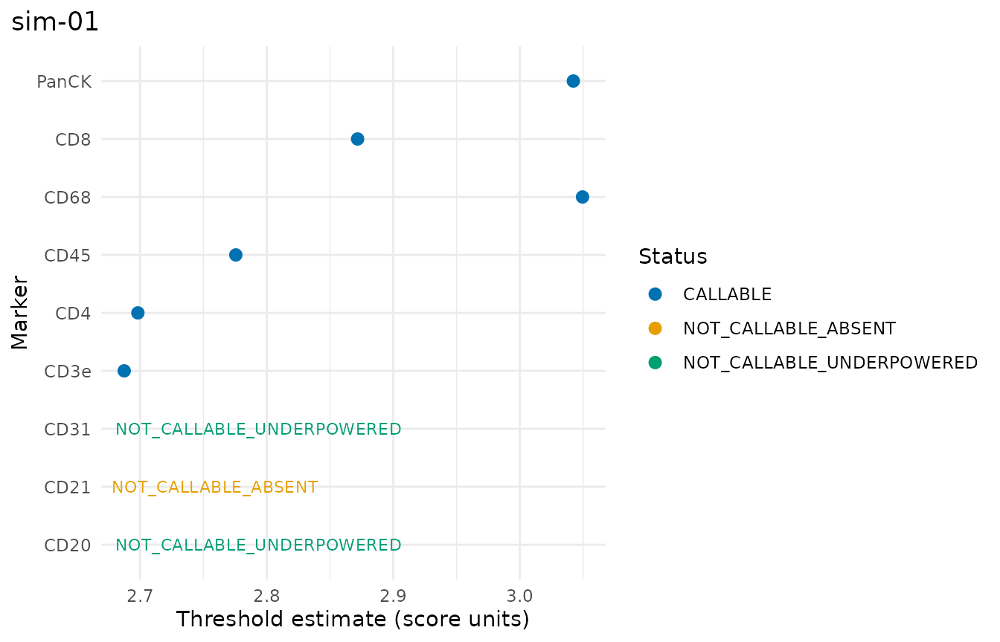
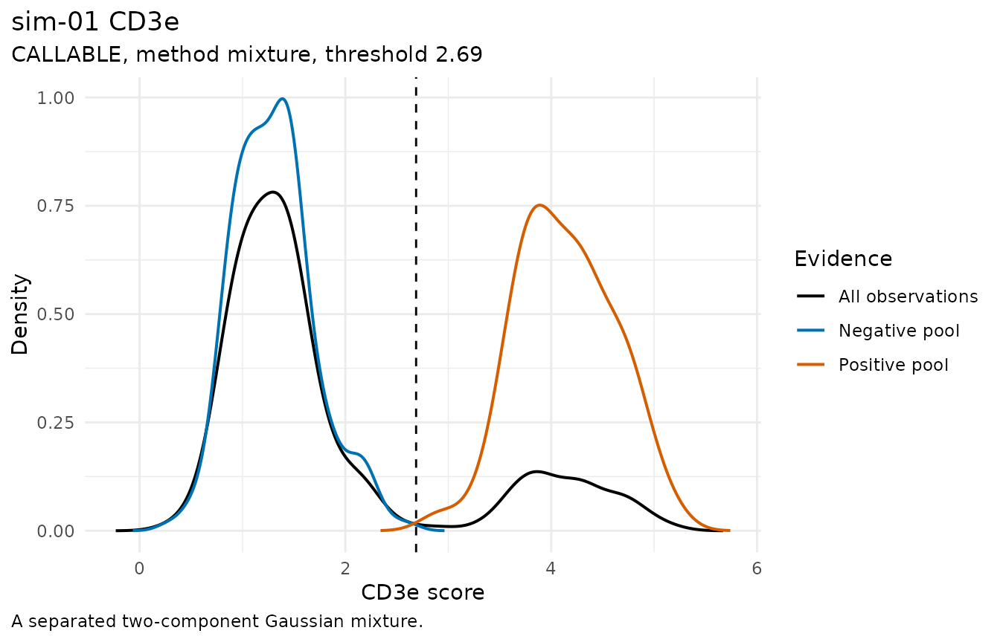

Thresholds are estimates with evidence and status, not magic constants. List the available methods with:
gk_threshold_methods()[, c("method", "role_allowed")]
#> method role_allowed
#> 1 manual identity, conditional_identity, state
#> 2 valley identity, conditional_identity, state
#> 3 tail identity, conditional_identity, state
#> 4 mixture identity, conditional_identity, state
#> 5 population_crossing identity, conditional_identity
#> 6 parent_crossing stateThe arguments and description columns of
the same table list the settings of each method with their defaults and
state what the method does.
Each marker names its method in the panel
(threshold_method and threshold_args in
gk_panel()), so a batch run and the review application
estimate the same thing. gk_thresholds() then returns one
row per image and marker. A method may return an explicit not-callable
status instead of a cut; inspect the status before treating a marker as
usable.
cfg <- gk_example_config()
prep <- gk_prepare(gk_simulate(n_cells = 300L, seed = 7L), cfg, quiet = TRUE)
thresholds <- gk_thresholds(prep, cfg, seed = 7L)
as.data.frame(thresholds)[, c("marker", "method", "status", "estimate")]
#> marker method status estimate
#> 1 PanCK mixture CALLABLE 3.042256
#> 2 CD45 mixture CALLABLE 2.775582
#> 3 CD3e mixture CALLABLE 2.687402
#> 4 CD4 mixture CALLABLE 2.698194
#> 5 CD8 mixture CALLABLE 2.871802
#> 6 CD20 mixture NOT_CALLABLE_UNDERPOWERED NA
#> 7 CD68 mixture CALLABLE 3.049520
#> 8 CD31 mixture NOT_CALLABLE_UNDERPOWERED NA
#> 9 CD21 mixture NOT_CALLABLE_ABSENT NAThe same table can be drawn. Markers without an estimate keep their row and state why they have no cut; the density view shows the evidence behind one estimate.
image_id <- prep$cells$image_id[[1L]]
gk_plot_thresholds(thresholds, image_id = image_id)
gk_plot_density(thresholds, marker = "CD3e", image_id = image_id)
Clipped scores and the mixture method
gk_correct(method = "robust_z") clips scores to the
range from -5 to 5. A strongly stained marker then has many cells tied
at 5. A Gaussian component cannot describe such a point mass: the fit
would shrink onto the tied values and place the cut next to the bound,
so that clearly positive cells below the bound are called negative. The
mixture method therefore returns
NOT_CALLABLE_NO_SEPARATION when at least nine in ten cells
of a pool are tied at the bound of the score range and the cut lands
next to that bound. Tied scores alone, for example at a floor of zero,
do not block a fit whose cut stays between the two modes. Use the
valley or tail method for such a marker, or
estimate on uncorrected scores.
Manual corrections can replace an estimate through the review ledger. The original estimate remains in the ledger, allowing the final result to explain which cut was used and why.